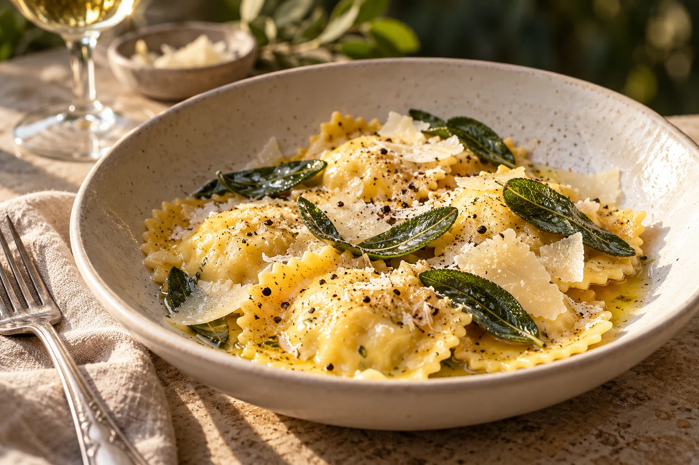
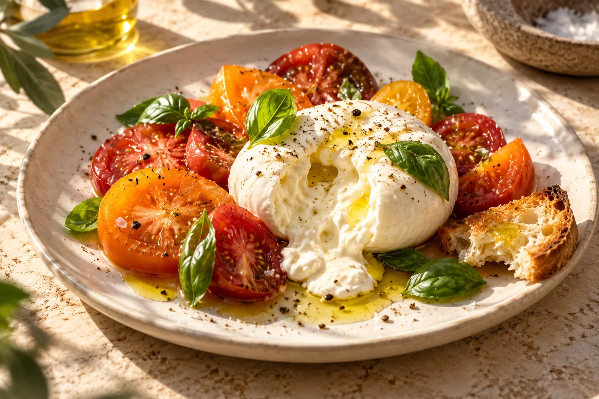
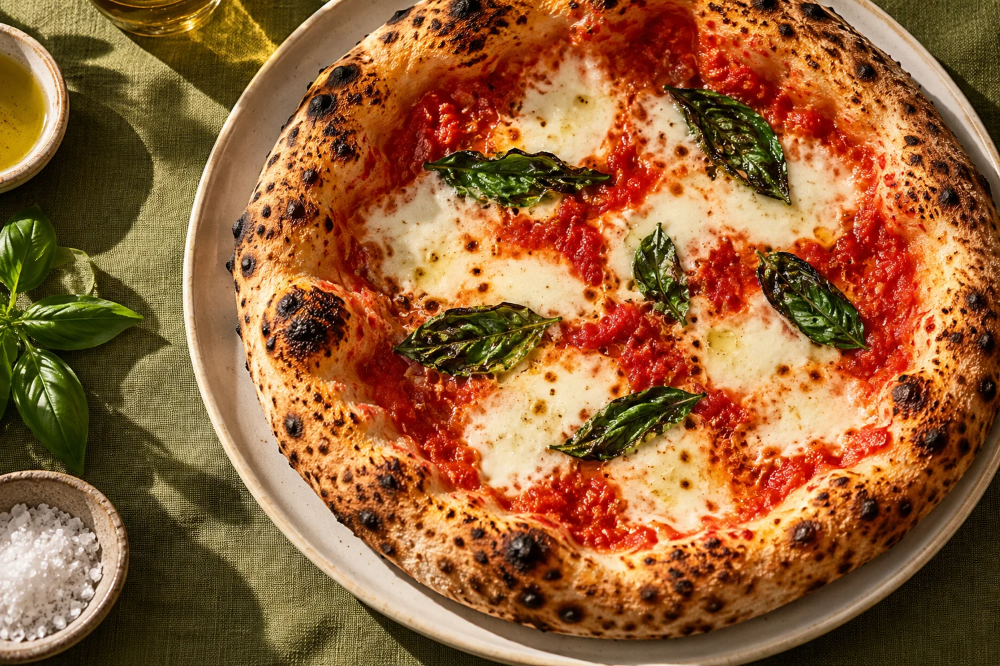

UNE ESCALE ITALIENNE, À GENVAL
L’Italie.
Le lac.
La dolce vita.
Le goût de l’Italie, le bonheur d’être ensemble.
Bienvenue au bord du lac de Genval.


01 — L’ESPRIT DE LA MAISON
Le meilleur de l’Italie ?
Le partager.
Une grande tablée, des pâtes fraîches, une conversation qui s’étire. Il y a des moments qui n’ont besoin de rien de plus.
Au bord du lac de Genval, La Laguna réunit les envies et les générations autour d’une cuisine italienne généreuse. Déjeuner entre amis, dîner à deux ou grande réunion de famille : ici, il y a toujours une place pour les bons moments.
Découvrir le lieu03 — LES PIEDS AU BORD DE L’EAU
Ici, le temps
a une autre saveur.
Le lac pour horizon.
La terrasse pour prolonger l’instant.
Aux beaux jours, les saveurs de l’Italie rencontrent les rives du lac de Genval. Un déjeuner, un apéritif, une soirée qui prend son temps : offrez-vous une échappée à deux pas du quotidien.

04 — LA LAGUNA, CHEZ VOUS
Votre table.
Notre Italie.
Les mêmes envies, le même plaisir.
Et 10 % de réduction sur la carte restaurant à emporter.
Composez votre sélection, appelez-nous et passez chercher vos plats. La suite de la soirée vous appartient.
05 — QUELQUES INSTANTS VOLÉS
Un lieu où l’on aime
revenir.
VOS PLUS BEAUX MOMENTS
Grandes tablées.
Belles histoires.
Une fête de famille, un déjeuner professionnel, une occasion particulière ?
Imaginons ensemble le moment qui vous ressemble.
06 — À TRÈS BIENTÔT
Votre prochain
bon moment.
Une question pour préparer votre venue ou connaître nos horaires ?
Nous sommes à votre écoute.